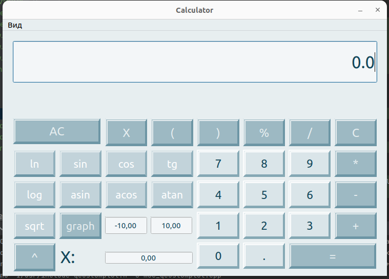
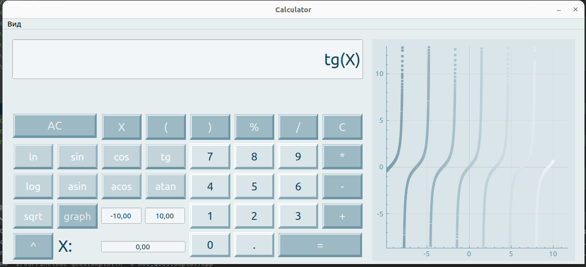
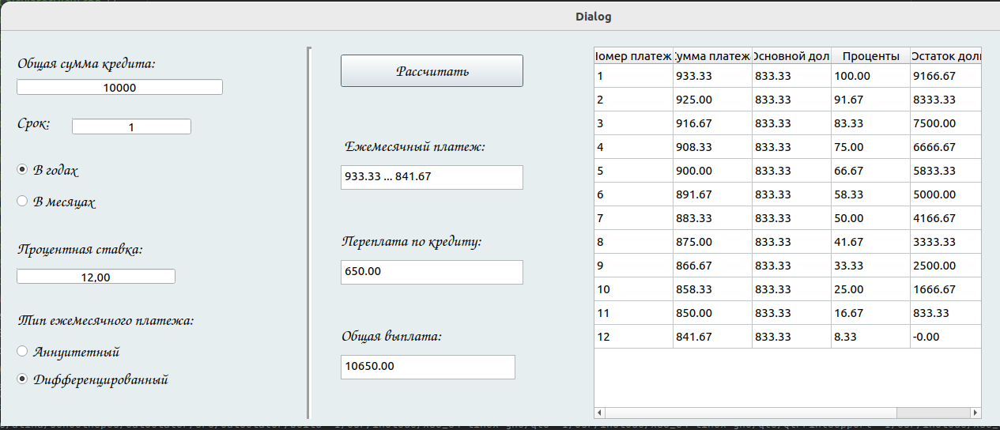

Smartcalc_v1.0 manual page
Руководство Smartcalc_v1.0
В приложении представлен графический калькулятор с поддержкой следующих операции и построением графиков:
Поддерживаемые операции:
- Вычисление операций со скобками: (a + b)
- Сложение: a + b
- Вычитание: a - b
- Умножение: a * b
- Деление: a / b
- Возведение в степень: a ^ b
- Остаток от деления: a mod b
Поддерживаемые функции:
- Косинус: cos(x)
- Синус: sin(x)
- Тангенс: tan(x)
- Арк косинус: acos(x)
- Арк синус: asin(x)
- Арк тангенс: atan(x)
- Квадратный корень: sqrt(x)
- Натуральный логарифм: ln(x)
- Десятичный логарифм: log(x)
Если функция содержит x, пользователю будет предоставлена возможность подстановки нужного значения
вместо x, также есть возможность отрисовки графика в отдельном окне.
При не правильном вводе приложение сообщает об ошибке.
При количестве символов большем чем 255 сообщает об этом
Кредитный калькулятор помогает расчитывать проценты по кредиту. Пользователь имеет возможность ввести сумму
кредита, количество месяцев, процентную ставку и выбрать тип кредита: аннуитетный или дифференцированный.
Программа высчитывает ежемесячный платеж, процентные выплаты и общую переплату.
Калькулятор был сделан давно-давно давно, когда я еще ничего не делила по папочкам, а сейчас не хочу(


